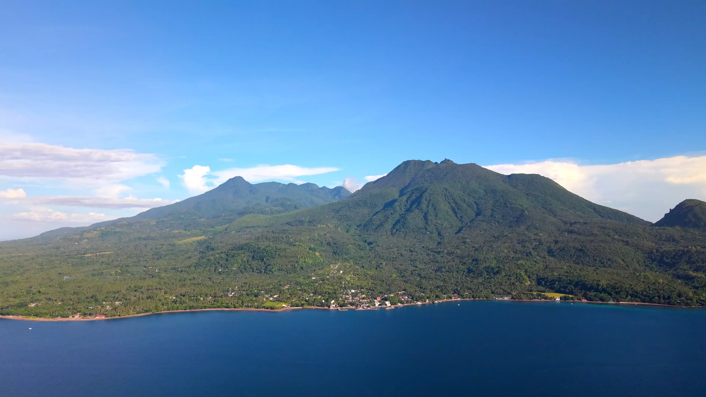
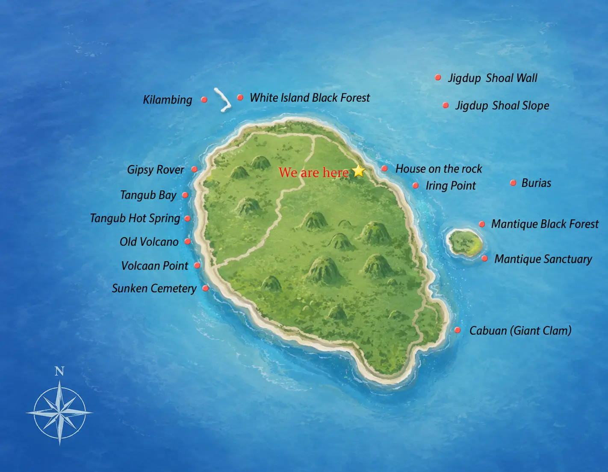

Camiguin Diving — Dive into the Untouched Waters of Camiguin Island
Blue Season is the dive center for scuba diving in Camiguin. Discover pristine coral reefs, swim with sea turtles, and explore one of the Philippines' best-kept diving secrets — away from the crowds.
Your Diving Adventure Starts Here
Whether it's your first time diving into the azure seas or you're looking to explore the secret dive sites of Camiguin, we'll create unforgettable diving memories for you with our passion and professionalism.
Certified Training
We offer PADI Courses from Open Water to Divemaster Levels as well as other PADI Specialty Courses.
Fun Dive
Divers, let's go! Join us to explore the best dive sites in Camiguin.
Snorkeling Trip
Go snorkeling and see big turtles at Mantigue Island!
Accommodation
Our resort is located by the Anito sea, quiet and comfortable. After diving, you can lie on the beach chair and enjoy the sunshine.
6 Spectacular Dive Sites Around Camiguin Island
From gentle coral gardens to thrilling drift dives — Camiguin diving has something for every level.


Mantigue Island
Mantigue Island is the most popular dive destination in Camiguin, known for its clear waters, healthy coral reefs, and abundant marine life. From vibrant reef slopes to the famous black forest areas, divers can encounter schools of fish, big sea turtles, and occasional pelagic species.

Jigdup Shoal
Jigdup Shoal (includes 2 dive sites: Jigdup Slope and Jigdup Wall) is one of the island's most vibrant and biologically rich dive sites. Jigdup stands out for its healthy coral reefs, schooling fish, and classic tropical reef scenery.

White Island
White Island is not only a striking white sandbar but also a rewarding dive site known for its reef slopes and rich marine biodiversity. Beneath its calm, crystal-clear surface lies an enchanting underwater landscape, including notable black coral gardens that attract a wide variety of marine species.

Burias Shoal
Burias Shoal is widely regarded as one of the top dive sites around Camiguin. Known for its dramatic topography, moderate to strong currents, and pelagic encounters, it offers a thrilling mix of reef, slope, and open-water action.

Sunken Cemetery
Sunken Cemetery was created after the 1871 eruption, which caused an old cemetery to sink beneath the sea. Today, a large cross marks the spot above the water, while a calm and mysterious underwater site remains below.

Cabuan / Giant Clam
Cabuan is best known as a giant clam sanctuary. Of the seven types of giant clams in the world, six can be found in Camiguin, making it one of the most unique ecological dive sites on the island.
Learn to Dive in Camiguin — PADI Certifications
From your very first breath underwater to advanced PADI certifications — we guide you every step of the way at our Camiguin dive center.
Discover Scuba Diving
No experience needed. Try scuba diving with a certified instructor and explore Mantigue Island with 2 dives included.
Learn MorePADI Open Water
Get your worldwide PADI Open Water certification. Includes all equipment, materials, and certification fees.
Learn More
Beachfront Dive Resort
Wake up steps from the ocean at our cozy beachfront resort in Anito. Air-conditioned rooms, hot water, Wi-Fi, pool, and a restaurant serving local and international dishes.
For 2 guests, including breakfast. Extra bed +₱500.
Frequently Asked Questions About Camiguin Diving
Answers to the most common questions about diving in Camiguin Island, Philippines.
Where is the best place to go diving in Camiguin?
Camiguin has six main dive sites. Mantigue Island is the most popular for sea turtles and coral reefs; Burias Shoal is for advanced divers seeking thresher sharks; Sunken Cemetery offers historic volcanic ruins; Jigdup Shoal features a swim-through cave; White Island has scenic black coral gardens; and Cabuan is a giant clams sanctuary. Blue Season Camiguin is a dive center in Anito, Mambajao, offering dives to all these sites.
How much does diving cost in Camiguin?
Fun dives at Blue Season Camiguin start at ₱1,500 per dive for the house reef and ₱4,500 for a 2-dive boat trip. Discover Scuba Diving costs ₱7,000 (includes 2 dives). PADI Open Water certification is ₱22,000 all-inclusive. All prices include full equipment, boat, guide, and marine park fees.
Is Camiguin good for beginner divers?
Yes — Camiguin Island is excellent for beginners. Sites like Mantigue Island, White Island have calm conditions, great visibility (15–30m), and shallow depths (5–20m). Blue Season is a dive center with certified instructors offering Discover Scuba Diving and Open Water courses.
When is the best time to dive in Camiguin?
Camiguin offers year-round diving. The best conditions — calmest seas and best visibility — are typically March to June. November through February can have stronger winds but still offer excellent diving. Water temperature stays between 26–29°C year-round.
How do I book a dive with Blue Season Camiguin?
WhatsApp is the fastest way to book: +63 949 876 5618. We typically reply within an hour. You can also reach us via Facebook Messenger, WeChat (ID: blueseason0203), or email at blue.season@outlook.com.
How do I get to Camiguin Island?
Fly to Camiguin Airport (CGM) via Cebu Pacific from Cebu, or take a ferry from Jagna port, Bohol or Balingoan Port, Misamis Oriental (Cagayan de Oro area). Our resort in Anito, Mambajao is a short drive from both. We can arrange airport pickup — just ask when you book.
Ready to Dive Camiguin?
Book your Camiguin diving experience today via WhatsApp for the fastest response. We typically reply within an hour.